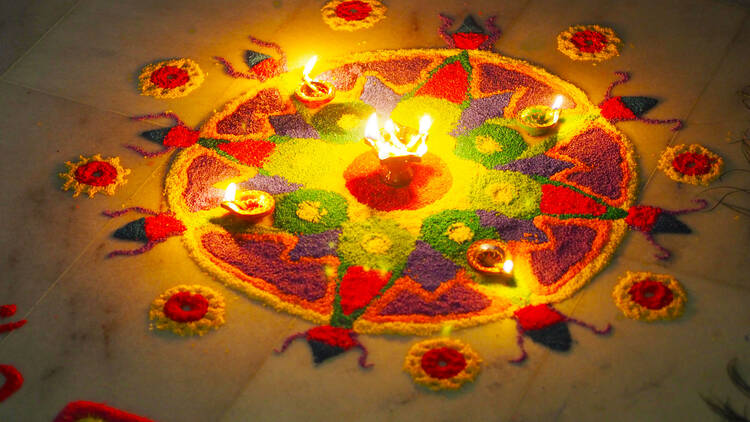
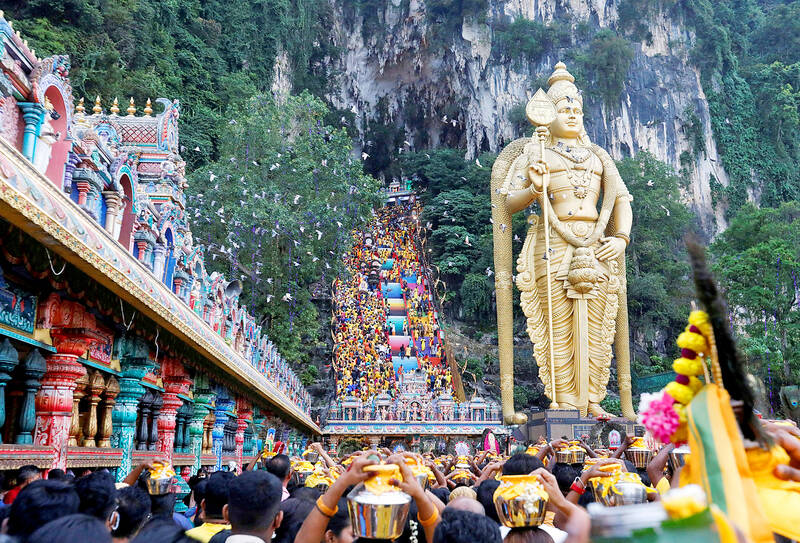

Deepavali
Deepavali, also known as Diwali, is the Hindu festival of lights. It symbolises the spiritual "victory of light over darkness, good over evil, and knowledge over ignorance". Diwali is celebrated during the Hindu lunisolar months of Ashvin (according to the amanta tradition) and Kartika—between around mid-September and mid-November, with celebrations lasting around five or six days. During the festival, the celebrants illuminate their homes, temples and workspaces with diyas (oil lamps), candles and lanterns. Hindus, in particular, have a ritual oil bath at dawn on each day of the festival. Diwali is also marked with fireworks and the decoration of floors with rangoli designs, and other parts of the house with jhalars. Food is a major focus with families partaking in feasts.
Thaipusam
Thaipusam is a Tamil Hindu festival celebrated on the first full moon day of the Tamil month of Thai coinciding with Pusam star. The festival includes ritualistic practices of Kavadi Aattam, a ceremonial act of sacrifice carrying a physical burden as a means of balancing a spiritual debt. Worshipers often carry a pot of cow milk as an offering and also do mortification of the flesh by piercing the skin, tongue or cheeks with vel skewers. Devotees prepare for the rituals by keeping clean, doing regular prayers, following a vegetarian diet and fasting while remaining celibate. They also perform drumming and chanting of verses help them enter a state of trance and Vibuthi, a type of holy ash is spread across the body including the piercing sites.
